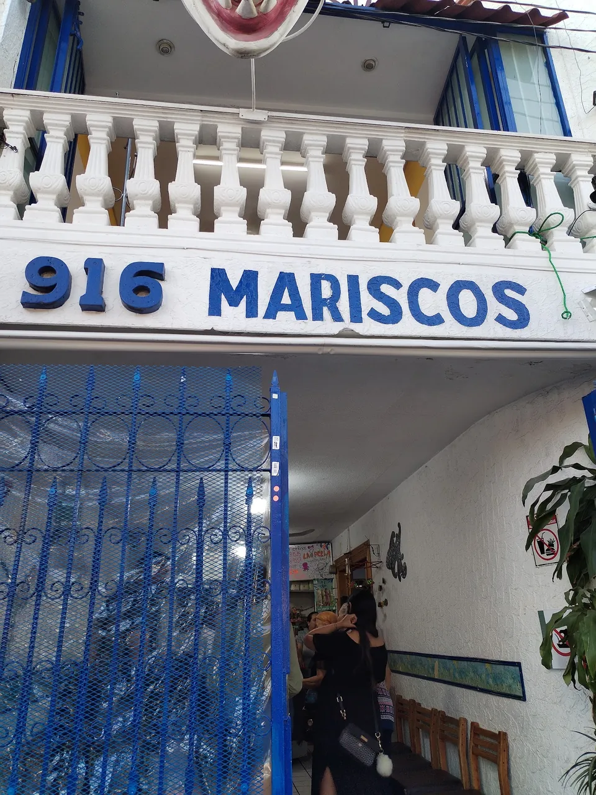
Mariscos y cortes · Aguascalientes
Mariscos al barro, cortes pa' todos.
Aguachile, molcajete y filetes. Dos casas: Bocanegra 916 y Av. Abelardo López 612.
01 · La charola
Llena la charola. Nosotros la ponemos.
Toca lo que se te antoja, elige día y casa, y mándalo ya armado.
Ya te pusimos dos. Toca otro o quítalos.
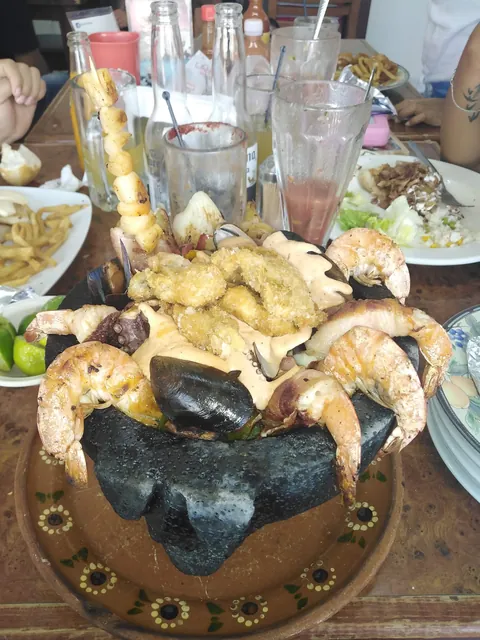
Molcajete de mariscos
Pregunta el precio
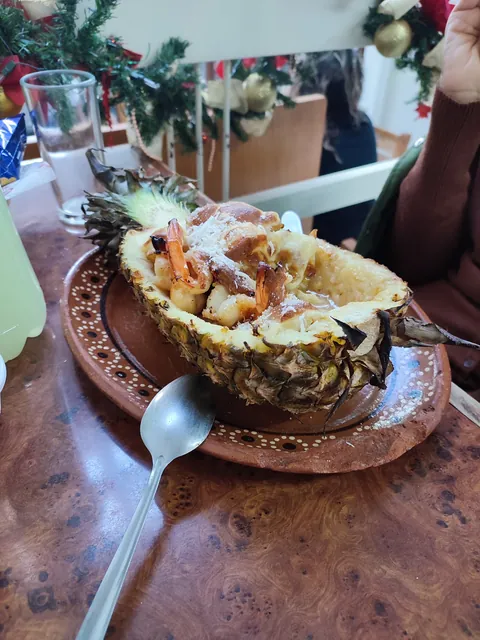
Piña con camarones
Pregunta el precio
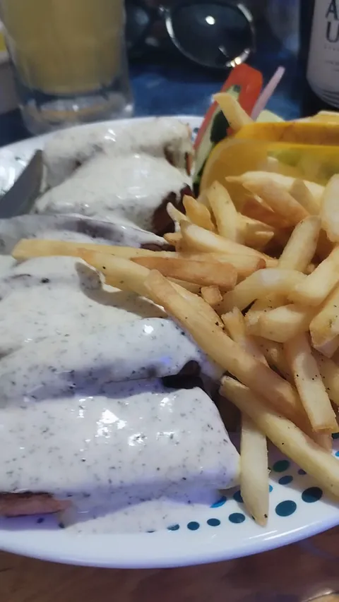
Filete con papas
Pregunta el precio
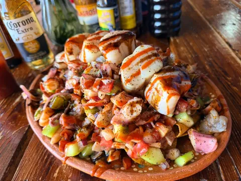
Charola de mariscos
Pregunta el precio
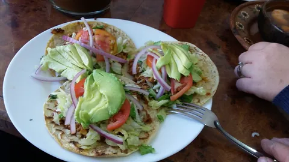
Tostadas de aguacate
Pregunta el precio
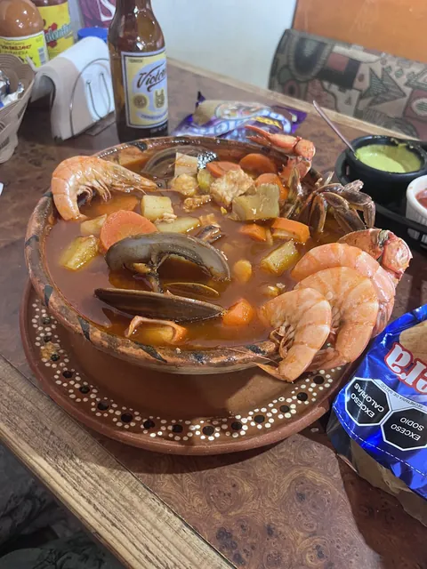
Caldo de mariscos
Pregunta el precio
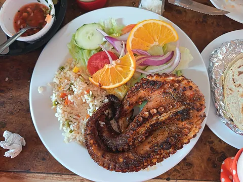
Pulpo asado
Pregunta el precio
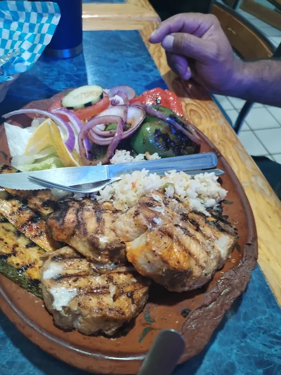
Asado al barro
Pregunta el precio
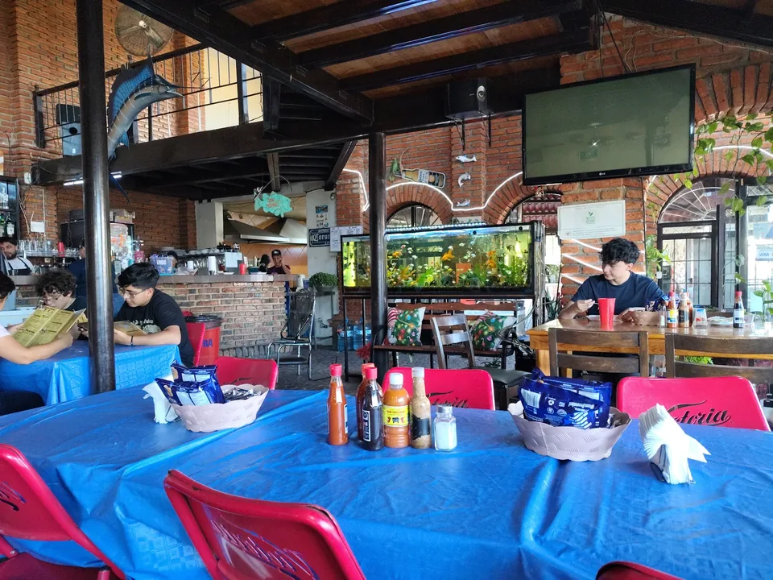
Domingo con música
Poniente, Av. Abelardo López 612. Mesas azules y ambiente en vivo.
02 · Así llega
Barro, limón y mesa llena.
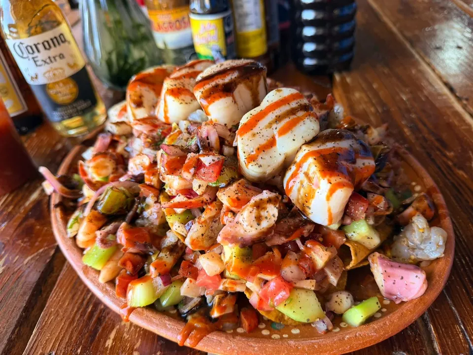
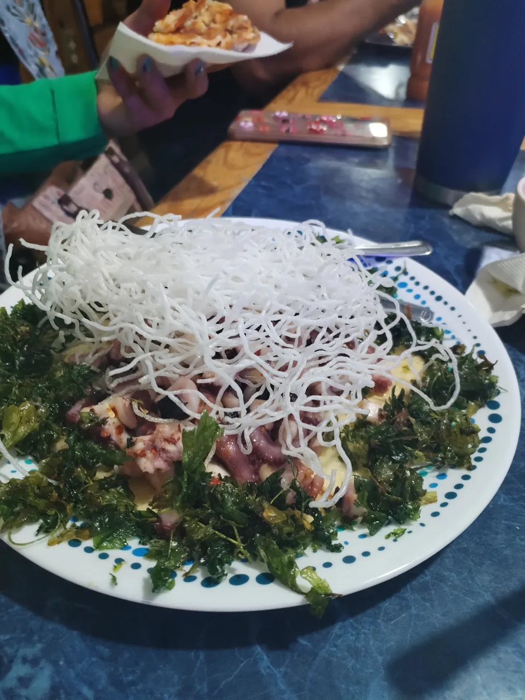
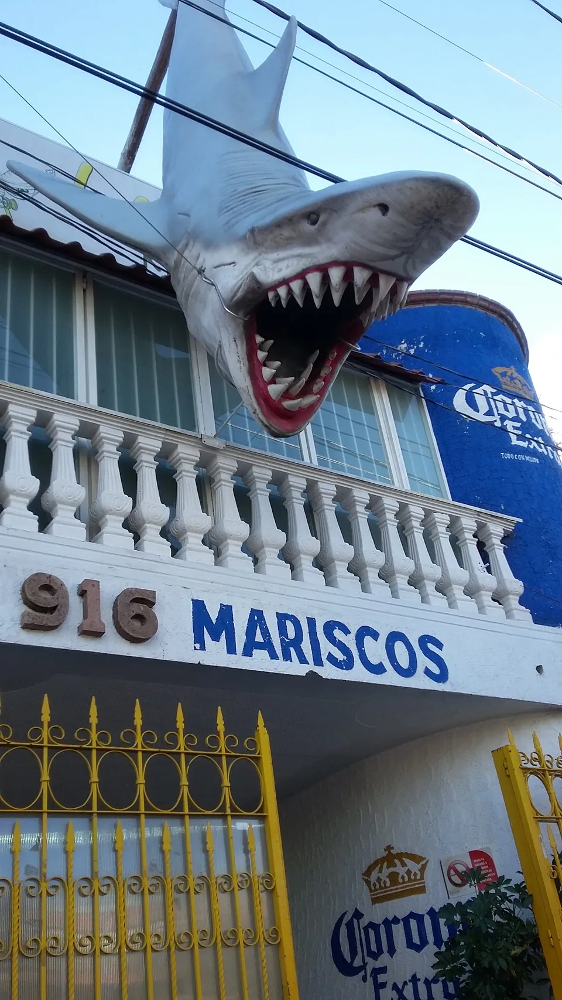
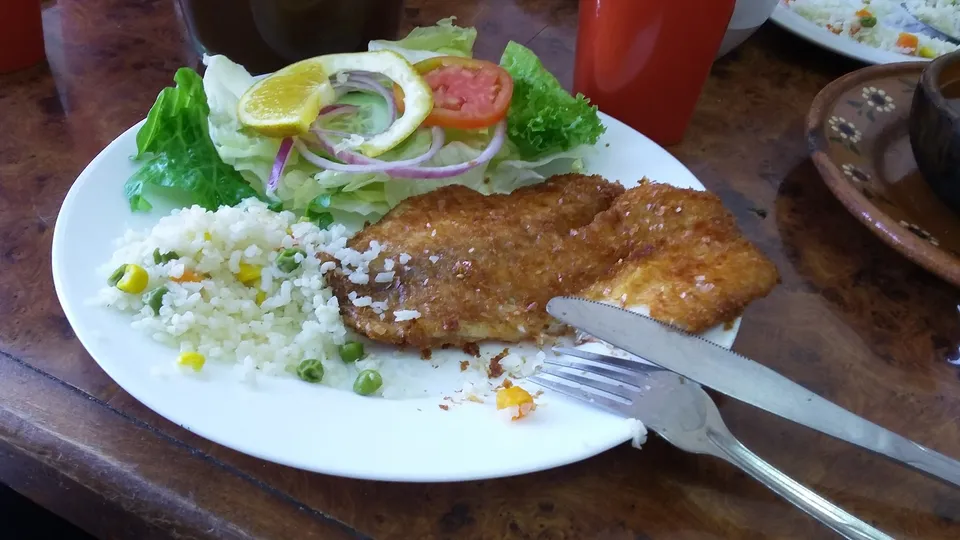
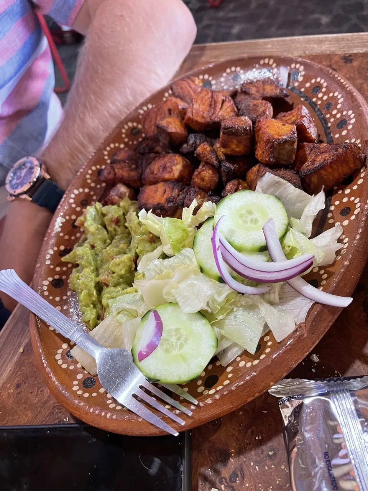
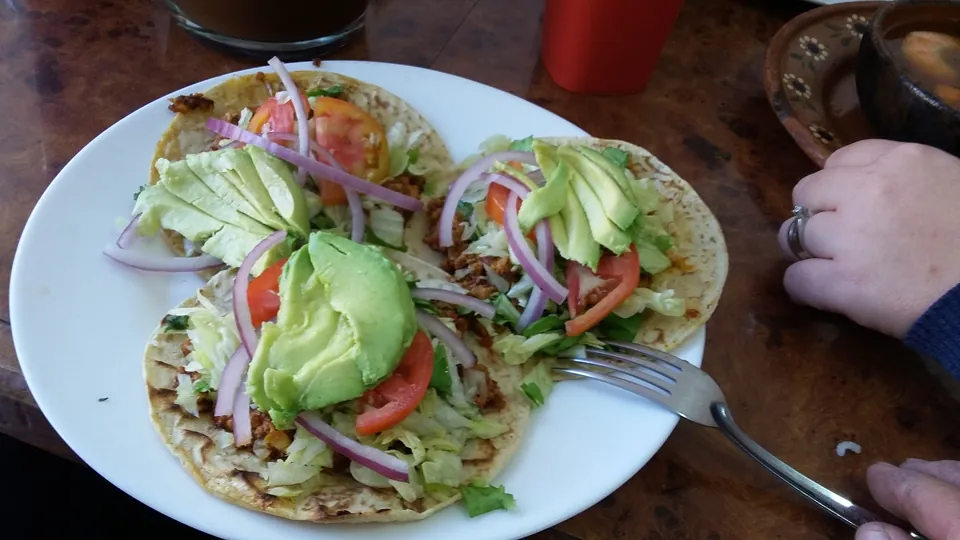
03 · Opiniones
Lo dicen las mesas.
en Google, con 1,143 opiniones en la casa del Centro. Poniente: 4.4 con 270.
Me encantó el sazón y presentación de los platillos, el salmón portobello riquísimo, la atención excelente y los precios adecuados.
Precios accesibles, buen sazón y raciones completas y llenadoras. Atención y servicio excelente.
Tienen buen sazón, yo pido aguachile de mango habanero me encanta.
Excelente servicio de parte de los meseros, muy rápido, delicioso y a muy buen precio, hoy domingo tocó ambiente musical.
Muy rico todo lo que he probado del menú, la atención es rápida y bastante amable.
Tanto las tostadas, tacos y caldo de mariscos tiene un buen sazón, las porciones buen con relación al precio.
Muy variado el menú, no son sólo mariscos y tienen menú para niños.
Fuimos por 1era vez y la verdad valio la pena cada centavo de la cuenta.
Es un buen lugar para comer mariscos en todas las temporadas.
04 · Visítanos
Dos casas, ninguna cierra el mismo día.
Centro
José María González Bocanegra 916José López Portillo, 20206
- Lunes12 p.m. a 7 p.m.
- Martes12 p.m. a 7 p.m.
- MiércolesCerrado
- Jueves12 p.m. a 7 p.m.
- Viernes12 p.m. a 7 p.m.
- Sábado12 p.m. a 7 p.m.
- Domingo12 p.m. a 7 p.m.
Poniente
Av. Abelardo López Rodríguez 612Puerta del Sol, 20329
- Lunes11 a.m. a 7 p.m.
- MartesCerrado
- Miércoles11 a.m. a 7 p.m.
- Jueves11 a.m. a 7 p.m.
- Viernes11 a.m. a 7 p.m.
- Sábado11 a.m. a 7 p.m.
- Domingo11 a.m. a 7 p.m.
Todo listo para completar
Falta lo tuyo.
- WhatsApp de pedidosHoy usamos el teléfono de cada casa.
- Carta con preciosPara quitar el "Pregunta el precio".
- Tu logo en archivoHoy el letrero es el de la fachada.
- Casa NorteSi sigue abierta, mándanos dirección y horario.
- Redes y fotosTu Instagram y las fotos que más venden.
Pásanoslo por el mismo chat donde te llegó esta muestra.